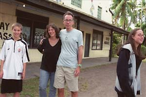

|
Anxiety of Influence
Teenagers Georgia and Wyatt Pierson on their family's filmic mission to Fiji
BY SPENCER PARSONS
|

Reel Paradise (l-r: Wyatt, Janet, John, and
Georgia Pierson)
|
For a year, John and Janet Pierson's Grainy Pictures answering machine would pick up with a rather mysterious outgoing message about the whole operation absconding to a "Fiji film colony," which sounded like a joke or a stunt, but turned out to be a comically honest description – much like Reel Paradise, the film made about the experience. In Steve James' documentary about the Piersons' year in Fiji programming free movies at the world's remotest cinema, the presence of a well-off American family bringing Hollywood blockbusters to the island of Taveuni represents no new colonial incursion, if it does embody an aspect of the ongoing colonial history and bring some of its complications to the surface. But as much emphasis as is put on the conflict between Christian and Cinema missionaries, and between Western and Indian colonists, the film ultimately offers an entertainingly thorny consideration of the everyday influences exerted by a functional and candidly high-decibel family upon their surroundings ... and vice versa. While John Pierson is well known for his influence on the American independent film scene, in scheduling the films for Taveuni's Meridian cinema, he depended on essential guidance from two outspoken critics of indie film: his kids. Georgia, 17, and Wyatt, just shy of 15, agreed to discuss Fiji, the film, and their programming philosophy.
Wyatt Pierson: The movies we wanted were the movies the Fijians wanted to see. And our dad knew that, and so that's mostly what he'd show.
Georgia Pierson: They laughed their asses off at guys in drag, like in The Hot Chick or Sorority Boys ...
WP: But sometimes he'd do a movie that just he liked, and it didn't work. Like Apocalypse Now Redux. People were sleeping. I always thought if that movie was like 45 minutes it would be pretty great.
GP: Dad talks about how Rabbit Proof Fence did well –
WP: Yeah, right.
GP: We think maybe it was because there was a bunch of walking in it. People in Fiji walk everywhere, so they could relate.
AC: And how is it to return to America?
WP: I think now I see things more openly. Or at least I notice more how closed-minded other people are ...
GP: It's a lot colder and less friendly here. Everyone you see [in Fiji] says hi to you. ... [You] could really live for free there. People feed you, everyone shares everything, and you can fall asleep in the middle of a field and no one messes with you. You can't really do that here very easily.
AC: So it's kind of funny that there was a problem with the idea of showing free movies to the Fijians ...
WP: The church didn't like the idea of us giving handouts.
GP: Yeah, they thought it created like a backsliding mentality, like giving free things to the Fijians would be de-evolving them or something.
AC: How did the film crew affect things?
WP: More than how we changed, I think it changed how the Fijians acted. They'd kind of stay away, and they wouldn't speak English to the camera.
GP: And [the crew] wanted us to do more stuff together than normal. They wanted us to be a different kind of family than we were for the movie. But we don't go kayaking and on wilderness trips.
WP: But I think forcing us to be together more made us seem dysfunctional because then we couldn't stand each other.
AC: And how have people reacted to that?
GP: Well, a lot are like, "Oh, I understand! Editing makes everything look a lot more extreme!" There's always the question of why I'm a bastard that comes up in terms of the family seeming dysfunctional. The stuff they put in the movie does make me seem like an asshole. And I did it and I'd probably do it again. And maybe it's a little out of context. Maybe there's stuff that I did that if you saw it I'd redeem myself a little more, you know? I can't deny that it happened.
WP: Everything happened, but I think things would have happened differently if the camera hadn't been there.
AC: Any harsh criticism you've had to deal with so far?
GP: When we went to Portland [International Film Festival], that was the coolest thing ever. At Sundance everything was smooth, everyone was nice, and things were natural, and we could kind of just giggle about everything. But at Portland, there were these crazy, righteous people that just hated it. They'd stand up and give a long speech about how we should have taken sensitivity training before we went or something. They were like, "Boo to you guys for ruining the world!" And we were just going to live there for a year, and most of the stuff we showed had already made it there on bootlegs. We weren't forcing people to come to movies. We were just making them available. We were easily avoided.
AC: And do you want to be easily avoided by your friends here? Are they going to see it at SXSW?
WP: I'm not telling anybody.
GP: My friends are broke. They won't go. Unless they can get in for free. And I don't want to corrupt them, too! 
Reel Paradise screens at 6pm, Monday, March 14, at Paramount Theatre, and 4pm, Saturday, March 19, at Alamo Drafthouse Downtown.
More Press...
|